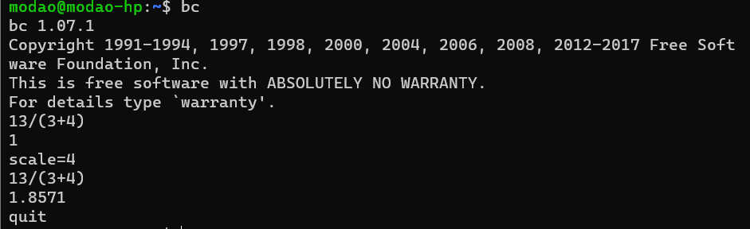

原文：
1. 语法
1.1 变量
变量是脚本语言的核心，shell脚本又是无类型的。变量本质上存储数据的一个或多个计算机内存地址，分为
- 本地变量（用户当前shell生命期使用，随shell进程的消亡而无效，类似局部变量）
- 环境变量（适用于所有由登录进程所产生的子进程）
- 位置参数（向shell脚本传递参数，只读）
变量的类型
shell是弱类型语言所以不需要使用类型限定，并且变量可以修改类型。
下面的例子定义了一个字符串类型的str变量，之后修改为数值类型
注意点：变量等号两边不能有空格出现
|
无类型变量
C中定义变量需要声明整型、浮点型、字符型等，而shell脚本变量却是无类型的。shell不支持浮点型只支持整型和字符型，同时字符型还具有一个整型值（判断标准：变量中只包含数字是数值型其他是字符串）。
位置参数：从命令行向shell脚本传递参数，$0表示脚本的名字，$1代表第一个参数，以此类推。从${10}开始参数号需要用花括号括起来。
特殊的位置参数：
变量名 作用 $0 当前脚本的名字 $n 传递给脚本或者函数的参数，n表示第几个参数 $# 传递给脚本或函数的参数个数 $* 传递给脚本或函数的所有参数 $@ 传递给脚本或者函数的所有参数 $$ 当前shell脚本进程的PID $? 函数返回值，或者上个命令的退出状态 $* 和 $@ 的区别
相同：$* 和 $@ 都表示传递给函数或脚本的所有参数不被双引号(“ “)包含时，都以”$1” “$2” … “$n” 的形式输出所有参数。
区别：当它们被双引号(“ “)包含时，”$*” 会将所有的参数作为一个整体，以”$1 $2 … $n”的形式输出所有参数；”$@” 会将各个参数分开，以”$1” “$2” … “$n” 的形式输出所有参数。内部变量：指能够对bash shell脚本行为产生影响的变量，属于环境变量的范畴。
变量名 作用 $BASH BASH记录了shell的路径，通常是/bin/bash。内部变量SHELL是通过BASH的值确定当前Shell的类型 $BASH_ENV BASH的启动文件 $BASH_VERSINFO 是一个包含6个元素的数组，这些元素用于表示bash的版本信息。
BASH_VERSINFO[0]表示bash shell的主版本号，BASH_VERSINFO[1]表示shell的次版本号，BASH_VERSINFO[2]表示shell的补丁级别，BASH_VERSINFO[3]表示shell的编译版本，BASH_VERSINFO[4]表示shell的发行状态，BASH_VERSINFO[5]表示shell的硬件架构。$BASH_VERSION linux系统的bash shell版本包含主次版本、补丁级别、编译版本和发行状态，即BASH_VERSINFO数组取值为0~4。 $EDITOR 脚本所调用的默认编辑器 $EUID 当前有效的用户ID $FUNCNAME 当前函数名 $GROUPS 当前用户所属组，linux的一个用户可同时包含在多个组内，GROUPS是一个数组记录了当前用户所属的所有群组号。管理用户组的文件是/etc/group，格式：群组名：加密后的组口令：群组号：组成员，组成员（组成员列表）。 $HOME 当前用户家目录 $HOSTTYPE
$MACHTYPE都用于记录系统的硬件架构，它们与BASH_VERSINFO[5]等值 $LINENO 当前行号 $OSTYPE 记录操作系统类型，linux系统中，$OSTYPE=linux。 $PATH PATH路径 $PPID 当前shell进程的父进程ID $PWD 当前工作目录 $SECONDS 当前脚本运行秒数 $TMOUT 不为0时，超过指定的秒将退出shell $UID 当前用户ID $DIRSTACK 它显示目录栈的栈顶值。linux目录栈用于存放工作目录，便于程序员手动控制目录的切换，bash shell定义了两个系统命令pushd（将某目录压入目录栈并将当前工作目录切换到入栈的目录）和popd（将栈顶目录弹出并将当前工作目录切换到栈顶目录）来维护目录栈。
DIRSTACK记录栈顶目录值，初值为空。linux还有一个命令dirs用于显示目录栈的所有内容。$GLOBIGNORE 它是由冒号分隔的模式列表，表示通配时忽略的文件名集合。一旦GLOBIGNORE非空，shell会将通配得到的结果中符合GLOBIGNORE模式中的目录去掉。例如ls a*列出当前目录以a开头的文件，设置GLOBIGNORE=“ar*”，再次执行ls a*将剔除以ar开头的文件。 $HOSTNAME HOSTNAME记录了主机名，linux主机名是网络配置时必须要设置的参数，可在/etc/sysconfig/network文件中设置主机名。/etc/hosts文件用于设定IP地址和主机名之间的对应关系，可快速从主机名查找IP地址。 $REPLY REPLY变量与read和select命令有关。read用于读取标准输入（stdin）的变量值，read variable将标准输入存储到variable变量中，而select将读到的标准输入存储到REPLY变量中。 $SECONDS SECONDS记录脚本从开始执行到结束所耗费的时间（单位为秒）。调试性能时比较有用。 $SHELLOPTS 它记录了处于开状态的shell选项列表，它是一个只读变量。Shell选项用于改变Shell的行为，Shell选项有开和关两种状态，set命令用于打开或关闭选项。set -o optionname（打开名为optionname选项），set +o optionname（关闭名为optionname选项）。比如打开interactive（交互模式运行）可以使用set -o interactive或set -i等价。Shell选项有很多。 $SHLVL 记录Shell嵌套的层次，启动第一个shell时，$SHLVL=1，若在这个Shell中执行脚本，脚本中的SHLVL为2，脚本中再执行子脚本，SHLVL就会递增。 $TMOUT 用于设置Shell的过期时间，TMOUT不为0时，shell会在TMOUT秒后将自动注销，TMOUT放在脚本中可以规定脚本的执行时间。 select脚本： #!/bin/bash
# "#?"提示符由shell提示符变量PS3进行设置（#?是其默认值）。
# 修改export PS3="your choice:"。
# REPLY变量值为用户选择的序号，var变量为REPLY序号所对应的字符串。
echo "Pls. choose your profession?"
select var in "Worker" "Doctor" "Teacher" "Student" "Other"
do
echo "The \$REPLY is $REPLY."
echo "Your preofession is $var."
break
done
有类型变量
Shell变量一般是无类型的，bash shell提供了declare和typeset两个命令用于指定变量的类型（它们完全等价）。
declare [选项] 变量名，有6个选项。
| 选项名 | 意义 |
|---|---|
| -r | 将变量设置为只读属性 |
| -i | 将变量定义为整形数 |
| -a | 将变量定义为数组 |
| -f | 显示此脚本前定义过的所有函数名及其内容 |
| -F | 仅显示此脚本前定义过的所有函数名 |
| -x | 将变量声明为环境变量 |
declare命令-r选项将变量设置成只读属性，与readonly命令一样，变量值不允许修改。
declare命令-x选项将变量声明为环境变量，相当于export，但declare -x允许声明环境变量同时给变量赋值，而export不支持。
declare -i将变量定义为整型数，不能再按字符串形式处理改变量（和let命令进行算术运算一样，expr命令可以替换let命令）。
|
变量赋值
变量赋值规则：
- 等号两边不能有空格
- 若value值包括空格必须用双引号
- 变量名只能由字母、数字、下画线组成，且不能以数字开头
unset命令清除变量的值
变量赋值模式
模式 意义 variable=value 将value的值赋给变量variable variable+value 对已赋值的variable，重设其值 variable?value 或 variable:?value 对未赋值的variable，显示系统错误信息 variable:=value 对未赋值的variable，将value值赋给它 variable:-value 对未赋值的variable，将value值赋给它，
但value值不存储到variable对应的地址空间readonly将变量设置为只读，只读变量不能再次进行赋值操作
modao@modao-hp:~$ color=red
modao@modao-hp:~$ readonly color
modao@modao-hp:~$ color=blue
-bash: color: readonly variable
变量使用
- 可以用变量的值给变量赋值
- 在变量名称前面加上
$符号，如str1=$str2 - 把变量名放在
${}中使用，如str1=${str2}
- 在变量名称前面加上
- 可以把命令执行结果作为右值赋值给变量
- 将命令放在
$()括号中使用 - 将命令放在上引号中使用
- 将命令放在
|
间接变量引用
该引用不是将变量引起来，而是理解为：如果第一个变量的值是第二个变量的名字，从第一个变量的名字引用第二个变量的值就称为间接变量引用。
bash shell提供了两种格式实现间接变量引用：
-
eval tempvar=\$$variable，其中eval是关键字，用\$$形式得到variable的间接引用 - ``tempvar=${!variable}
，用${!…}`得到variable的间接引用
使用间接变量引用实现数据库表格的查找：
|
引用
引用指将字符串用引用符号引起来，以防止特殊字符被shell脚本重解释为其他意义。
shell中定义了四种引用符号。
双引号：美圆符号($)、反引号(`)和反斜线(\)仍被解释为特殊意义，其它字符均解释为字面意义，利用双引号引用变量能防止字符串分割，而保留变量中的空格。因此双引号的引用方式称为部分引用。
单引号：除单引号本身之外都解释为字面意义，不再具备引用变量的功能，单引号的引用方式称为全引用。
反引号：反引号进行命令替换（将命令的标准输出作为值赋给某个变量），等价于$()，同时$()形式的命令替换是可以嵌套的。
# 当前工作目录
`pwd`
$(pwd)反引号与$()在处理双反斜线时存在区别
反引号将反斜线符号处理为空格
$()符号将其处理为单斜线符。
反斜线：表示转义，将屏蔽下一个字符的特殊意义，而以字面意义解析它。转义符除了屏蔽特殊字符的特殊意义外，加上一些字母能够表达特殊的含义（转义字符）。
1.2 打印
因为shell没有单步调试和其他功能强大的IDE，所以打印功能就经常使用到，此外打印功能还可以当做函数的返回值，比return作为函数的返回值功能更强大
shell 使用echo打印，内容默认输出到控制台中，echo可以打印字符串、变量、以及字符串中嵌入变量的混合内容
[更多内容见：echo详解]
|
1.3 运算
使用expr执行算术运算
expr一般用于整数值计算和字符串的操作。
若expr的操作符是元字符（不是普通字符），需要用转义符将操作符的特殊含义屏蔽，进行数学运算，如expr 2014 \* 2
expr中操作符的两端必须有空格，否则不会执行数学运算，如expr 2014 - 2008
注意：*乘法运算符号需要转义
|
使用[]执行算术
[]执行算术比expr简单多了，并且*乘法运算符号不需要转义
|
双圆括号执行算术运输
双圆括号即((…))格式。result=$((var1*var2));var1和var2执行乘法运算。
双圆括号可以使shell实现C语言风格的变量操作。 双圆括号实现五种C语言风格的运算：
- 自增自减是shell算术运算符中未曾定义过的，是C语言中的相关内容
- a = 2014，C语言允许赋值两端有空格但shell不允许
- 双圆括号还可以实现更加复杂的C语言的运算如逻辑判断、三元操作等。
|
bc运算器
bash 不支持浮点运算，如果需要进行浮点运算，需要借助bc,awk 处理
bc是一种内建的运算器，是bash shell中最常用的浮点数运算工具，包括整型数和浮点数、数组变量、表达式、复杂程序结构和函数。
bc运算器支持的数学运算符号如下表：
bc运算器定义了内建变量scale用于设定除法运算的精度（默认scale=0）。

scale设为4后，除法结果小数点后保留4位。bc -q可以使bc运算器不输出版本信息。
在shell中用bc运算器进行浮点数运算需要使用命令替换的方式。脚本中调用bc运算器一般格式：
|
|
bc运算器的指数运算计算var1变量的平方，scale=5输出结果的小数点后精确到第5位。
1.4 控制
数值比较
控制使用if/else/fi语法，典型的数值比较如下
|
单中括号的情况：当使用
if [ $1 = 1 ]时，如果变量“参数”的值为空，那么就if语句就变成了if [ = 1 ]，这不是一个合法的条件。为了避免出现这种情况，必须给变量加上引号if [ "$1" == "1" ]，这样即使是空变量也提供了合法的测试条件if [ " " == "1" ]关于双中括号：
- 双方括号提供了字符串比较的高级特性
- 括号中可以定义一些正则表达式来匹配字符串
- 注意不是所有的shell都支持双方括号！
单中括号是比较基本的变量计算及数值比较的方法，一般情况下已经足够使用；双中括号是扩展的数值比较方法，里面的数值计算也相对来说复杂些。
引申：
- 单括号和双括号的区别
- 单引号和双引号的区别
整数比较运算符
| 比较符 | 描述 |
|---|---|
| n1 -eq n2 | 检查n1是否与n2相等 |
| n1 -ge n2 | 检查n1是否大于或等于n2 |
| n1 -gt n2 | 检查n1是否大于n2 |
| n1 -le n2 | 检查n1是否小于或等于n2 |
| n1 -lt n2 | 检查n1是否小于n2 |
| n1 -ne n2 | 检查n1是否不等于n2 |
字符串运算符
Shell编程是严格区分大小写的，并注意空格的问题，运算符左右的空格不能少。
| 比较符 | 描述 |
|---|---|
| str1 = str2 | 检查str1是否和str2相同 |
| str1 != str2 | 检查str1是否和str2不同 |
| str1 < str2 | 检查str1是否比str2小 |
| str1 > str2 | 检查str1是否比str2大 |
| -n str1 str1 |
检查str1的长度是否非0 |
| -z str1 | 检查str1的长度是否为0 |
文件操作符
| 比较符 | 描述 |
|---|---|
| -d file | 检查file是否存在并是一个目录 |
| -e file | 检查file是否存在 |
| -f file | 检查file是否存在并是一个文件 |
| -r file | 检查file是否存在并可读 |
| -s file | 检查file是否存在并非空 |
| -w file | 检查file是否存在并可写 |
| -x file | 检查file是否存在并可执行 |
| -L file | 测试file是否符合化链接 |
| -O file | 检查file是否存在并属当前用户所有 |
| -G file | 检查file是否存在并且默认组与当前用户相同 |
| file1 -nt file2 | 检查file1是否比file2新 |
| file1 -ot file2 | 检查file1是否比file2旧 |
逻辑运算符
| 逻辑操作符 | 描述 |
|---|---|
| ! expression | 如果expression为假，测试结果为真 |
| expression1 -a expression2 | 如果expression1和expression2同时为真，则测试结果为真 |
| expression1 -o expression2 | 如果expression1和expression2中有一个为真，则测试结果为真 |
用于测试多个条件是否为真或为假，也可使用逻辑非测试单个表达式。
表达式：expression1 -a expression1 -aexpression1（并不是所有的运算符都会被执行，只有表达式expression1为真，才会测试expression2为真。只有expression1和expression2都为真才会接着测试expression3是否为真）
表达式：expression1 -aexpression1 -aexpression1（只要expression1为真，就不用去测试表达式expression2和expression3。只有expression1为假时才会去判断表达式expression2和expression3。同样，只有expression2和expression3同时为假时才会去测试expression3）
算术运算符
| 运算符 | 描述 |
|---|---|
| + | 加运算 |
| - | 减运算 |
| * | 乘运算 |
| / | 除运算 |
| % | 取余运算 |
| ** | 幂运算 |
使用let命令来执行算术运算，除法和取余运算过程中要注意除数不能为0，使用算术运算符无法对字符串、文件、浮点型数进行计算（浮点型操作，需要用到专门的函数）。
算术运算符与赋值运算符”=”联用，称为算术复合赋值运算符：+=、-=、*=、/=、%=。
自增自减运算符
自增自减运算符包括前置自增、前置自减、后置自增和后置自减。自增自减操作符的操作元只能是变量，不能是常数或表达式，且该变量值必须为整数型。
|
数字常量
脚本或命令默认将数字以十进制的方式进行处理，当使用0作为前缀时表示八进制，当使用0x进行标记时表示十六进制，同时还可使用num#这种形式标记进制数。
|
位运算符
用于整数间的运算
位运算符同样可以同赋值运算符联用，组成复合赋值运算符。
测试命令test
Linux中shell的测试命令，用于测试某种条件或某几种条件是否真实存在。
测试命令是判断语句和循环语句中条件测试的工具，对判断和运算符的比较测试有很大的帮助。
测试条件为真，返回一个0值；为假，返回一个非0整数值。
测试命令有两种方式
-
test expression -
[ expression ]，其中[是启动测试命令，]要与之配对，而且”[“和”]”前后的空格必不可少，此方式常作为流程控制语句的判断条件。
退出状态
Linux系统，每当命令执行完成后，系统返回一个退出状态。
- 若退出状态值为0，表示命令运行成功
- 反之若退出状态值不为0，则表示命令运行失败
- 最后一次执行命令的退出状态值被保存在内置变量
$?中。
| 状态值 | 含义 |
|---|---|
| 0 | 表示运行成功，程序执行没有遇到任何问题 |
| 1~125 | 表示运行失败，脚本命令、系统命令错误或参数传递错误 |
| 126 | 找到了改命令但无法执行 |
| 127 | 未找到要运行的命令 |
| >128 | 命令被系统强行结束 |
exit命令格式：exit status（status在0～255之间），返回该状态值时伴随脚本的退出，参数被保存在shell变量$?中
if条件判断
if、then、else语句用于判断给定的条件是否满足，并根据测试条件的真假来选择相应的操作。if/else仅仅用于两分支判断，多分支的选择时需要用到if/else语句嵌套、if/elif/else和case多分支选择判断结构。
if结构
|
注意：测试条件后如果没有”;”则then语句要换行。
if/else结构
|
if/else语句嵌套
可同时判断三个或三个以上条件，但要注意if与else配对关系，else语句总是与它上面最近的未配对的if配对。
|
if/elif/else结构
if/else嵌套在编程中很容易漏掉then或fi产生错误，而且可读性很差，因此引入if/elif/else结构针对某一事件的多种情况进行处理，fi只出现一次，可读性也提高了。
|
case结构
case结构变量值依次比较，遇到双分号则跳到esac后的语句执行，没有匹配则脚本将执行默认值*)后的命令，直到;;为止。
case的匹配值必须是常量或正则表达式。
|
1.5 循环
三种常用的循环语句：for、while和until。while循环和for循环属于“当型循环”，而until属于“直到型循环”。
循环控制符：break和continue控制流程转向。
for循环
列表for循环
|
- 按规定的步数进行跳跃的方式实现列表for循环
|
- for循环对字符串进行操作
|
- for通过命令行来传递脚本中for循环列表参数
|
不带列表for循环
由用户制定参数和参数的个数，与上述的for循环列表参数功能相同。
|
C语言格式的for循环
也被称为计次循环
|
for in 循环处理文件
data文件内容如下：
|
while 循环
while表示条件满足执行循环
- 计数器控制的while循环
|
- 结束标记控制的while循环
|
- 标志控制的while循环
|
控制的while循环求1～n的累加和，循环变量值小于100执行else累加同时循环变量加1，直到循环变量值等于100将标志值设置为1，并输出。
控制的while循环与结束标记控制的while循环的区别是用户无法确定无法确定结束标志，只能程序运行后确定结束标志。两者也可以相互转化。
- 命令行控制的while循环
|
until 循环
until和while相反，表示条件不满足执行循环
|
循环嵌套
一个循环体内又包含另一个完整的循环结构，在外部循环的每次执行过程中都会触发内部循环，for、while、until可以相互嵌套。
- 嵌套循环实现九九乘法表
|
- for循环嵌套实现*图案排列
|
循环控制符break和continue
- break
在for、while和until循环中break可强行退出循环，break语句仅能退出当前的循环，如果是两层循环嵌套，则需要在外层循环中使用break。
|
- continue
在for、while和until中用于让脚本跳过其后面的语句，执行下一次循环。continue用于显示100内能被7整除的数。
|
select结构
select结构从技术角度看不能算是循环结构，只是相似而已，它是bash的扩展结构用于交互式菜单显示，功能类似于case结构比case的交互性要好。
- select带参数列表
|
- select不带参数列表
|
1.6 容器
数组定义
数组（Array）是一个由若干同类型变量组成的集合，数组均由连续的存储单元组成，最低地址对应于数组的第一个元素，最高地址对应于最后一个元素。
数组的定义如下declare -a array_name
osx系统因为bash的版本太低，只能定义索引数组
在bash版本高于4.1的版本可以使用
declare -A array_name定义关联数组
以下的代码片定义一个数组，用于保存配置文件中的内容，然后使用for循环遍历数组内容输出到控制台。
-
a[$n]=$line把内容保存到数组 -
${a[@]}获取数组的所有元素，打印时只打印被赋值的元素而不打印未赋值的元素 -
${#a[@]}` 获取数组的元素个数 - `temp=${a[i]}`读取数组第i个元素 > `"${a[@]}"`将数组的所有元素分行打印，而`"${a[*]}"`只能将数组的所有元素打印在一行内且中间以IFS分隔。 > > 不用引号时`${a[@]}`和`${a[*]}`是等价的，使用引号时，@和\*只是打印数组的方式存在差异。就代表了最后一个命令行参数变量。然而并不是这样，你不能在花括号内使用美元符，必须将美元符换成感叹号即#### 数组用法 数组的字符串操作与字符串操作的符号和意义完全一致，数组字符串操作特殊之处在于所有的操作都是针对所有的数组元素逐个进行的。# 可以用圆括号将一组值赋给数组
city=(Nanjing Beijing Melbourne NewYork)
# 可以按照任意顺序指定任意元素对数组赋值
city=([2]=Nanjing [10]=Atlanta [1]=Massachusetts [5]=Marseilles)
# Shell中允许数组空缺元素，即可以不连续地给数组赋值
# 指定所赋元素的标号，并以此标号为起点继续赋值
city=(Nanjing [10]=Atlanta Massachusetts Marseilles)
# 用引号包含空格的字符串
city[1]="Hong Kong"数组可以存放read命令所读入的用户输入参数，`declare -a city`（并不是必须的）将city申明为数组，用`read -a city`命令将输入存储到city数组之中，输入以空格分开。 + `unset city[0]`命令清空一个元素 + `unset city`清空整个数组。 + `${#city[@]}`获取数组的长度。 shell数组的一种重要操作：数组连接。#数组的字符串操作
#!/bin/bash
city=(Nanjing Atlanta Massachusetts MaseillesMas)
echo "Extracting Substring" #抽取字串
echo ${city[*]:0} #抽取整个数组 Nanjing Atlanta Massachusetts Marseilles
echo ${city[*]:1} #抽取从第1个元素到结束的数组 Atlanta Massachusetts Marseilles
echo ${city[*]:3} #抽取从第3个元素到结束的数组 Marseilles
echo ${city[*]:0:2} #抽取从第0个元素开始的两个元素 Nanjing Atlanta
echo
echo "Removing Substring" #删除字串
echo ${city[*]#M*a} #删除匹配M*a的最短字串 Nanjing Atlanta ssachusetts rseilles
echo ${city[*]##M*a} #删除匹配M*a的最长字串 Nanjing Atlanta chusetts rseilles
echo
echo "Replcing Substring" #替换子串功能
echo ${city[*]/M*s/Year} #替换第1次与M*a匹配的子串 Nanjing Atlanta Year Year
echo ${city[*]//Mas/Year} #替换所有与Mas匹配的子串 Nanjing Atlanta Yearsachusetts YeareillesYear
#替换的正则为最长匹配数组实现简单的数据结构 数据结构是指相互之间存在一种或多种特定关系的数据元素的集合，它直接影响到程序的运行速度和存储效率。Shell不直接支持如堆栈、队列、链表等数据结构，但可以很容易实现线性数据结构。对于树形、图等复杂的数据结构，shell理论上可以实现，但难度较大。 利用数组实现堆栈操作：push函数将字符串压入堆栈，pop函数能弹出栈顶元素，status函数打印当前堆栈的状态信息。 其中shift命令完成两个功能： 1. 所有位置参数左移1位，即\$2移动到\$1的位置，\$3移动到\$2的位置，依次类推（\$0不变） 2. `$#`变量值减1。#!/bin/bash
city=(Beijing Nanjing Shanghai)
person=(Cai [5]=Wu Tang) #数组不连续地赋值
declare -a combine #声明combine数组
combine=(${city[@]} ${person[@]}) #combine是数组city和person的连接，连接操作将不连续的元素按序存放到combine数组中
element_count=${#combine[@]} #while循环输出combine数组
index=0
while [ "$index" -lt "$element_count" ]
do
echo "Element[$index]=${combine[$index]}" #数组标号与值的对应关系
let "index=$index+1"
done
###################
echo
unset combine #清空combine数组
combine[0]=${city[@]} #将city数组赋给combine[0]的一个元素
combine[1]=${person[@]} #将person数组赋给combine[1]的一个元素
element_count=${#combine[@]}
index=0
while [ "$index" -lt "$element_count" ]
do
echo "Element[$index]=${combine[$index]}"
let "index=$index+1"
done
###################
echo
declare -a subcombine=${combine[1]} #声明数组时赋值
element_count=${#subcombine[@]}
index=0
while [ "$index" -lt "$element_count" ]
do
echo "Element[$index]=${subcombine[$index]}"
let "index=$index+1"
done利用一维数组模拟实现二维数组，二维数组仍存储在一维数组中，只是通过行号和列号计算出数组的索引而已。可以采用该方法使shell脚本语言用于定义二维数组和矩阵。#!/bin/bash
MAXTOP=50 #堆栈能存放元素的最大值
TOP=$MAXTOP #栈顶指针，初始值是$MAXTOP
TEMP=
declare -a STACK #全局数组STACK
push() #push进栈操作，可同时将多个元素压入堆栈
{
if [ -z "$1" ] #无参数，返回
then
return
fi
#for ((i=1; i<=$#; i++))
until [ $# -eq 0 ] #until循环将push函数的所有参数都压入堆栈
do
let TOP=TOP-1 #栈顶指针减1
STACK[$TOP]=$1
shift #脚本参数除$0外左移1位，$#参数总个数减1
done
return
}
pop() #pop出栈操作，执行pop函数使栈顶元素出栈
{
TEMP=
if [ "$TOP" -eq "$MAXTOP" ] #若堆栈为空，返回
then
return
fi
TEMP=${STACK[$TOP]} #栈顶元素出栈
unset STACK[$TOP]
let TOP=TOP+1 #栈顶指针加1
return
}
status() #显示当前堆栈内的元素，以及TOP指针和TEMP变量
{
echo "==========STACK=========="
for i in ${STACK[@]}
do
echo $i
done
echo "Stack Pointer=$TOP"
echo "Just popped \""$TEMP"\" off the stack"
echo "=========================="
}
push one #1个元素入栈
status #显示状态
push two three four #3个元素入栈
status
pop #出栈
pop
status
push five six
status### 1.7 方法 方法的定义有两种方式 - function func1 { #这里定义方法体 } - func2() { #这里定义方法体 } 方法返回值的处理有三种方式 - return 最大返回256，表示结果码，有特殊含义，并且只能返回数值 - echo 返回 - 保存在全局变量中 方法的参数 - 参数的传递添加在方法之后，多个使用空格分割 - 参数的获取 - 使用`$1`、`$2`以此类推 - 特别地`$0`表示文件名 - `$#`表示参数的个数#创建一个二维数组，并以逐行打印及旋转45度打印的两种方式将它打印出来
#!/bin/bash
#定义行数、列数，及数组名
ROW=5
COL=5
declare -a MATRIX #申明MATRIX数组
load_alpha ()
{
local rc=0
local index
#for循环将A-Y这25个字符存储到MATRIX数组
for i in A B C D E F G H I J K L M N O P Q R S T U V W X Y
do
local row=`expr $rc / $COL`
local column=`expr $rc % $ROW`
let "index = $row * $ROW + $column"
MATRIX[$index]=$i
let "rc += 1"
done
}
print_alpha ()
{
local row=0
local index
#逐行打印MATRIX数组
while [ "$row" -lt "$ROW" ]
do
local column=0
echo -n " "
while [ "$column" -lt "$COL" ]
do
let "index = $row * $ROW + $column"
echo -n "${MATRIX[index]} "
let "column += 1"
done
let "row += 1"
echo
done
echo
}
filter () # 过滤掉负的数组下标.
{
echo -n " " # 产生倾斜.
# 解释一下, 这是怎么做到的.
if [[ "$1" -ge 0 && "$1" -lt "$ROW" && "$2" -ge 0 && "$2" -lt "$COL" ]]
then
let "index = $1 * $ROW + $2"
# 现在, 按照旋转方向进行打印.
echo -n " ${MATRIX[index]}"
# alpha[$row][$column]
fi
}
rotate () # 将数组旋转45度 --
{ #+ 从左下角进行"平衡".
local row
local column
for (( row = ROW; row > -ROW; row-- ))
do
for (( column = 0; column < COL; column++ ))
do
if [ "$row" -ge 0 ]
then
let "t1 = $column - $row"
let "t2 = $column"
else
let "t1 = $column"
let "t2 = $column + $row"
fi
filter $t1 $t2 # 将负的数组下标过滤出来
done
echo; echo
done
}
#下面利用上述函数创建二维数组，逐行和旋转45°打印数组
load_alpha # 加载数组
print_alpha # 打印数组
rotate # 逆时针旋转45°打印### 1.8 别名 linux定义别名基本格式为`alias name='original-command'`（等号两边不能有空格），如alias ipconfig=ifconfig。 删除已经设置的别名，使用内建命令`unalias`： + `unalias -a`表示删除所有已设置的别名 + `unalias alias-name`表示仅删除alias-name别名。 **要在脚本中使用别名功能，必须在脚本使用`shopt -s expand_aliases`命令打开 expand_aliases（表示别名可以被扩展）选项，未打开，alias建立别名的命令不会执行。** **在诸如if/then结构、循环和函数等混合型结构中不能使用alias命令设置别名，但可以执行在混合型结构之外所设置的别名。**echo "=======方法======="
function func1 {
echo "func1 invoked"
# 最大的返回值为256，超过了256取模的结果，280%256=24,最终返回24
return 280;
}
func2() {
echo "return value"
}
# 检测文件夹存在的方法，结果保存在全局变量`CheckInputDestDirRecursiveReturnValue`中
# 参数一：检测的文件夹路径
# 参数二：提示消息字符串
# 使用方式如下，去掉注释
# # 导入工具脚本
# . ./FileUtil.sh
# # 检测class_search_dir
# checkDirCore $class_search_dir "指定类的查找目录不存在"
# class_search_dir=${CheckInputDestDirRecursiveReturnValue}
checkDirCore() {
to_process_dir=$1
message=$2
echo "scriptName=${0} paramsCount=${#}"
# 需处理源码目录检查
if [[ -d $to_process_dir ]]; then
echo "目录存在 $to_process_dir"
CheckInputDestDirRecursiveReturnValue=$to_process_dir
return 1
else
echo "${message} ${to_process_dir}"
checkInputDestDirRecursive ${to_process_dir}
fi
}
echo `func1`
echo `func2`
func1
retValue=$?
echo "func1 retValue=$retValue"
retValue=`func2`
echo "func2 retValue=$retValue"
checkDirCore $(pwd) "指定类的查找目录不存在"
dir=${CheckInputDestDirRecursiveReturnValue}
echo "dir = ${dir}"
# 输出：
=======方法=======
func1 invoked
return value
func1 invoked
func1 retValue=24
func2 retValue=return value
scriptName=./syntax.sh paramsCount=2
目录存在 /Users/aron/git-repo/ShellLearning/helloshell
dir = /Users/aron/git-repo/ShellLearning/helloshell### 1.9 列表 shell中列表是由一串命令用与运算（&&）和或运算（||）连接而成，分别称为与列表和或列表。 + 与列表的格式为：命令1 && 命令2 && 命令3 &&... && 命令n，从左到右依次执行命名，直到某命令返回FALSE时（退出状态为非0）与列表执行终止。 + 或列表的格式为：命令1 || 命令2 || 命令3 ||... ||命令n，从左到右依次执行命名，但是当某命令返回TRUE时（退出状态为0）或列表执行终止。 在使用与或列表嵌套时需要利用圆括号区分逻辑运算的优先级。 **与列表**控制输入参数个数和返回状态码：#!/bin/bash
shopt -s expand_aliases #打开expand_aliases选项
alias detail="ls -l"
detail /root/in* #别名支持通配符*
echo
directory=/root/
prefix=in*
alias vardetail="ls -l $directory$prefix" #双引号和单引号在处理空格时是等价的，
#但设置vardetail引用了变量，此处只能使用双引号
vardetail
echo "Deleting all aliases:"
unalias -a #删除所有的别名
detail
vardetail**或列表**控制输入参数个数和返回状态码#!/bin/bash
MAXARGS=3
ERROR=68
test $# -ne $MAXARGS && echo "Usage: `basename $0` $MAXARGS arguments" && exit $ERROR
echo "Less than $MAXARGS arguments are passed to this script."
exit 0**由于echo命令总是返回TRUE，要将echo和false进行与运算从而返回FALSE值** ### 1.10 字符串 expr引出通用求值表达式，可以实现算术操作、比较操作、字符串操作和逻辑操作等功能。 字符串长度： + `expr length &string` + `${#string}` + 若string包括空格，`&string`需用双引号引起来（expr length后面只能跟一个参数，string有空格会当作多个参数处理）。 子串匹配索引： + `expr index $string $substring` + 在字符串`$string`上匹配`$substring`中字符（即子串非有序）第一次出现的位置，匹配不到，expr index返回0。 子串匹配的长度： + `expr match $string $substring` + 在string的开头匹配substring字符串，返回匹配到的substring字符串的长度，**若string开头匹配不到则返回0**，其中substring可以是字符串也可以是正则表达式。 抽取子串： + \#{...} + `#{string:position}`从名称为`$string`的字符串的第`$position`个位置开始抽取子串，从0开始标号。 + `#{string:position:length}`增加`$length`变量，表示从`$string`字符串的第`$position`个位置开始抽取长度为`$length`的子串。 + 从string右边开始计数抽取子串 + `#{string: -position}`，冒号与横杠间有一个空格 + `#{string:(position)}` + expr + `expr substr $string $position $length`：从1开始进行标号 + 使用正则表达式抽取子串的命令，但只能抽取string开头处或结尾处的子串 + 抽取字符串开头处的子串 + `expr match $string '$substring'` + `expr $string : '$substring'`，冒号前后都有一个空格。 + 抽取字符串结尾处的子串 + `expr match $string '.*$substring'` + `expr $string : '.*$substring'` + `.*`表示任意字符的任意重复 删除子串： 删除字串是指将原字符串中符合条件的子串删除，命令只有${...}格式。substring并非是正则表达式而是通配符。 + 从string开头处删除子串 + `${string#substring}`，删除开头处与substring匹配的最短子串。 + `${string##substring}`，删除开头处与substring匹配的最长子串。 + 从string结尾处开始删除 + `${string%substring}`，删除结尾处与substring匹配的最短子串。 + `${string%%substring}`，删除结尾处与substring匹配的最长子串。 替换子串： 替换子串命令都是${...}，可以在任意处、开头处、结尾处替换满足条件的子串。其中的substring都不是正则表达式而是通配符。 + 任意处替换 + `${string/substring/replacement}`，仅替换第一次与substring相匹配的子串。 + `${string//substring/replacement}`，替换所有与substring相匹配的子串。 + 开头处替换：`${string/#substring/replacement}` + 结尾处替换：`${string/%substring/replacement}` ### 1.11 I/O重定向 I/O重定向用于捕获一个文件、命令、程序或脚本甚至代码块的输出，然后把捕获到的输出作为输入发送给另外一个文件、命令、程序或脚本等。 I/O重定向最常用的方法是管道（管道符"|"）。 #### 管道 管道技术是Linux间的一种通信技术，利用先进先出排队模型来指挥进程间的通信（可当作连接两个实体的一个单向连接器）。Linux管道可用于应用程序之间、linux命令之间、应用程序与命令间的通讯。shell编程指利用管道进行Linux命令之间的通信。 管道通信的格式：`command1 | command2 | command3 | ... | commandn`，command1执行后如果没有管道则输出结果直接显示在shell上，当shell遇到管道符"|"后会将command1的输出发送到command2作为command2的输入。 例：ls -l | grep vi | wc -l，在三个命令之间建立两根管道，第一个命令ls -l的输出作为grep vi 的输入，第二个命令在管道输入下执行后的输出作为第三个命令wc -l的输入，第三个命令在管道输入下执行命令将结果输出到shell。 这是一个~~半双工通信~~，因通信是单向的，则两个命令之间的具体工作是由linux内核来完成的。 #### I/O重定向 I/O重定向是一个过程，这个过程捕捉一个文件、命令、程序或脚本，甚至代码块的输出，然后把捕捉到的输出作为输入发送给另外一个文件、命令、程序或脚本。 文件描述符是从0开始到9的结束的整数，指明了与进程相关的特定数据流的源。当Linux系统启动一个进程（该进程可能用于执行shell命令）时，将自动为该进程打开三个文件：标准输入（文件标识符为0）、标准输出（1标识）和标准错误输出（2标识），若要打开其他的输入或输出文件则从整数3开始标识。默认情况下，标准输入与键盘输入相关联，标准输出与标准错误输出与显示器相关联。 Shell从标准输入读取输入数据，将输出送到标准输出，如果该命令在执行过程中发生错误，则将错误信息输出到标准错误输出。 I/O重定向符号分为：基本I/O重定向符号和高级I/O重定向符号（与exec命令有关）。 基本I/O重定向符号和意义 | 序号 （举例） | 符号 | 意义 | | ------------- | ------------ | ------------------------------------------------------------ | | 1 | cmd1 md2 | 管道符，将cmd1的标准输出作为cmd2的标准输入 | | 2 | > filename | 将标准输出写到文件filename中 | | 3 | < filename | 将文件filename的内容读入到标准输出中去 | | 4 | >> filename | 将标准输出写到文件filename中，若filename存在则把内容追加到filename那么后面， | | 5 | >\| filename | 即使noclobber选项开启，仍然强制将标准输出写到filename中，即把filename内容覆盖掉 | | 6 | n>\|filename | 即使noclobber选项开启，仍然强制将FD为n的输出写到filename中，即把filename内容覆盖掉 | | 7 | n> filename | 将FD为n的输出写到filename文件中 | | 8 | n< filename | 将文件filename中内容读入到FD n中 | | 9 | n>> filename | 将FD为n的输出文件写到filename中，，若filename存在则把内容追加到filename那么后面， | | 10 | << delimiter | 此处文档（Here——document） | 高级I/O重定向符号和意义 | 符号 | 意义 | | ------ | -------------------------------------- | | n>&m | 将FD为m的输出复制到FD为n的文件中 | | n<&m | 将FD为m的输入复制到FD为n的文件中 | | n>&- | 关闭FD为n的输出 | | n<&- | 关闭FD为n的输入 | | &>file | 将标准输入和标准错误输出到重定向到文件 | #### exec命令 exec命令可以通过文件描述符打开或关闭文件，也可将文件重定向到标准输入及将标准输出重定向到文件。#!/bin/bash
MAXARGS=3
ERROR=68
test $# -eq $MAXARGS || (echo "Usage: `basename $0` $MAXARGS arguments" && false) || exit $ERROR
echo "Correct arguments are passed to this script."
exit 0#使用exec将stdin重定向到文件
#!/bin/bash
exec 8<&0 #FD 8是FD 0的副本，用于恢复标准输入
exec < file #将标准输入重定向到file
read a #读取file的第一行
read b #读取file的第二行
echo "----------------"
echo $a #标准输出
echo $b #标准输出
echo "close FD 8:"
#exec 0<&8 8<&- #将FD 8复制到FD 0，恢复FD 0，并关闭FD 8，其他进程可以重复使用FD 8
echo -n "Enter Data:"
read c #read从标准输入读取数据
echo $c#exec将标准输出从定向到文件
#!/bin/bash
exec 8>&1 #FD 8是FD 1的副本，用于恢复FD 1
exec > log #将标准输出重定向到log，>符号等价于1>符号
echo "Output of date command："
date #date和df命令
echo "Output of df command："
df
exec 1>&8 8>&- #FD 8复制到FD 0，FD 0恢复为标准输出，并关闭FD 8
echo "--------------------------------"
cat log #查看log文件#### 代码块重定向 代码块重定向是指在代码块内将标准输入或标准输出重定向到文件，而在代码块之外还是保留默认状态。可以重定向的代码块可以是while、until、for等循环结构、可以是if/then测试结构、还可以是函数。代码块输入重定向符号是<，输出重定向符号是>。 while循环的重定向：# &>file将stdout和stderr重定向到文件
#!/bin/bash
exec 8>&1 9>&2 #FD 1复制到FD 8，FD 2复制到FD 9
exec &> log #&>符号将stdout和stderr重定向到文件log
ls z* #错误写入文件log
date #输出写入文件log
exec 1>&8 2>&9 8<&- 9<&- #恢复关闭操作
echo "-----------------"
echo "Close FD 8 and 9:"
ls z*
datefor循环的重定向：#while循环的重定向
#!/bin/bash
ls /etc > log #将ls /etc的结果写到log文件中
while [ "$filename" != "rc.d" ] #搜索log文件中第一次与rc.d匹配的行，并输出行数
do #不匹配时，执行while循环体
read filename
let "count +=1"
done < log #将while代码块的标准输入重定向到log文件
echo "$count times read" #测试循环体外的标准输入是否被重定向
echo -n "-----Input Data:-----"
read test #最终是从标准输入获取数据
echo $testif/then结构的重定向，命令格式是（重定向符号要放在fi关键字后面）：#for循环的重定向
#!/bin/bash
ls /etc > log #将ls /etc的结果写到log文件中
maxline=$(wc -l < log) #计算log文件的最大行数，赋给maxline
for filename in `seq $maxline` #seq命令产生循环参数，相当于for filename in 1,2,...,maxline
do
read filename #按行读取log文件数据
if [ "$filename" = "rc.d" ] #if指定跳出循环的条件
then
break
else
let "count +=1" #不匹配，计数器count加1
fi
done < log #for代码块中将标准输入重定向到log文件
echo "$count：times read"
echo -n "-----Input Data:-----" #测试for外标准输入是否被重定向
read test
echo $test代码块重定向在一定程度上增强了shell脚本处理文本文件的灵活性，它可以让一段代码很方便地处理一个文件（只要该文件输入重定向到该代码块） ### 1.12 函数 Linux Shell编程中也会使用到函数，函数可以把大的命令集合分解成若干较小的任务，也避免重复编写相同的代码。在Shell中，所有的函数定义都是平行的，即不允许在函数体内再定义其他的函数，但允许函数之间相互调用。函数又涉及到很多基本使用：函数参数调用、函数返回值、局部变量及全局变量、函数间的相互调用和函数递归调用。 #### 定义 函数是一串命令的集合，如果脚本中有重复代码时可以考虑使用函数。 函数定义要求： + shell中函数的返回值只能是8位整形，范围为0~255 + 函数名在脚本中的唯一，可以在函数名前加上fuction关键字也可省略 + 函数体中的命令集合必须含有至少一条命令（函数不允许空命令，与C不同） + shell中不需要申明就可直接定义函数，但在调用函数前需对它进行定义。 shell脚本中循环调用函数的例子：#if/then结构的输出重定向
#!/bin/bash
if [ -z "$1" ] #如果位置参数$1为空
then
echo "Positional Parameter is NULL" #将该语句重定向输入到log文件
fi > log #if/then代码块输出重定向到log文件
echo "------Normal Stdout --------" #代码块外的标准输出是否被重定向判断当前目录下存在多少个文件和子目录：#function2.sh
#!/bin/bash
output()
{
for(( num1 = 1; num1 <= 5; num1++ ))
do
echo -n "$num1 "
done
}
let "num2=1"
while [ "$num2" -le 5 ]
do
output
echo ""
let "num2=num2 + 1"
done#### 参数 shell中，向函数传递的参数仍然是以**位置参数**的方式来传递的，而不能传递数组等其他形式变量（与c不同）。 利用函数参数的传递实现两数的四则运算：#显示当前目录下文件和目录数
#function3.sh
#!/bin/bash
directory()
{
let "filenum = 0"
let "dirnum = 0"
ls
echo "" #echo换行
for file in $( ls ) #for循环判断当前子目录和文件
do
if [ -d $file ] #判断为子目录
then
let "dirnum = dirnum + 1"
else #判断为文件
let "filenum = filenum + 1"
fi
done
echo "The number of directory is $dirnum"
echo "The number of file is $filenum"
}
directory #在脚本中调用函数#### 返回值 bash shell会把函数当作一个小型脚本，运行结束时会返回一个退出状态码，生成退出状态码有以下3种不同的方法： - **默认退出状态码：**默认情况下，函数的退出状态码是**函数中最后一条命令返回的退出状态码**。在函数执行结束后，可以用标准变量`$?`来确定函数的退出状态码。 **注意**：由于函数的默认退出状态码取决于函数体中最后一条命令的退出状态码，因此你无法知道函数中其他命令中是否成功运行，所以这种方法很危险。 - **使用`return`命令：**使用`return`命令来退出函数并返回特定的退出状态码，它允许指定一个整数值来定义函数的退出状态码，从而提供了一种简单的途径来编程设定函数退出状态码。 **注意**：①函数一结束就取返回值，否则可能会丢失返回值。②退出状态码的范围是0~255，超出则会取余。 - 使用函数输出： 正如可以将命令的输出保存到shell变量中一样，你也可以对函数的输出采用同样的处理办法。可以用这种技术来获得任何类型的函数输出，并将其保存到变量中。 有时需要函数执行完成后返回特定的值来完成脚本的后续操作。函数通过return返回退出状态，0表示true无错误，非0表示false有错误（与C不同）。#用于实现两数加、减、乘和除四则运算
#!/bin/bash
count()
{
if [ $# -ne 3 ] #3个参数，一个运算符两个数值
then
echo "The number of arguments is not 3! "
fi
let "s = 0"
case $2 in
+) #加法
let "s = $1 + $3"
echo "$1 + $3 = $s";;
-) #减法
let "s = $1 - $3"
echo "$1 - $3 = $s";;
\*) #乘法
let "s = $1 * $3"
echo "$1 * $3 = $s";;
\/) #除法-取余,浮点数运算使用bc
let "s = $1 / $3"
echo "$1 / $3 = $s";;
*) #其他
echo "What you input is wrong!";;
esac
}
echo "Please type your word: ( e.g. 1 + 1 )"
read a b c
count $a $b $c#### 调用 shell脚本中可以同时放置多个函数，函数之间允许相互调用，而且允许一个函数调用多个函数。#根据用户输入显示星期
#!/bin/bash
show_week()
{
echo -n "What you input is: "
echo "$1"
case $1 in
0)
echo "Today is Sunday. "
return 0;;
1)
echo "Today is Monday. "
return 0;;
2)
echo "Today is Tuesday. "
return 0;;
3)
echo "Today is Wednesday. "
return 0;;
4)
echo "Today is Thursday. "
return 0;;
5)
echo "Today is Friday. "
return 0;;
6)
echo "Today is Saturday. "
return 0;;
*)
return 1;;
esac
}
#if show_week "$1" #返回0表示函数输入的命令行参数是正确的
#也可以通过$?来获取函数执行的返回值
show_week "$1"
if [ $? -eq 0 ]
then
echo "What you input is right! "
else
echo "What you input is wrong! "
fi
exit 0#### 递归 shell中执行递归函数可以直接或间接地反复调用其自身，每调用一层就进入新的一层，主调函数又是被调函数。 使用局部变量进行递归实现阶乘运算，也可采用递推法实现。#用于显示一个不多于5位的正整数的位数，并按顺序显示各个数位的值
#!/bin/bash
count_of_int()
{
if [ $1 -gt 9999 ]
then
let "place=5" #5位数
elif [ $1 -gt 999 ]
then
let "place=4"
elif [ $1 -gt 99 ]
then
let "place=3"
elif [ $1 -gt 9 ]
then
let "place=2"
else
let "place=1" #1位数
fi
echo "The place of the $1 is $place." #整数的位数
}
num_of_int()
{
let "ten_thousand = $1/10000" #整数的数位分解值
let "thousand =$1/1000%10"
let "hundred = $1/100%10"
let "ten = $1%100/10"
let "indiv = $1%10"
if [ $ten_thousand -ne 0 ]
then
echo "$ten_thousand $thousand $hundred $ten $indiv"
elif [ $thousand -ne 0 ]
then
echo "$thousand $hundred $ten $indiv"
elif [ $hundred -ne 0 ]
then
echo "$hundred $ten $indiv"
elif [ $ten -ne 0 ]
then
echo "$ten $indiv"
else
echo "$indiv"
fi
}
show()
{
echo "Please input the number(1-99999): "
read num
count_of_int $num
num_of_int $num
}
show递归实现汉诺塔的问题（不使用局部变量的递归）#阶乘运算,当n=0时 0!=1，当n>=1时n!=n*(n-1)!
#!/bin/bash
fact ()
{
local num=$1 #函数需将先前的局部值进行逐个还原，故设置成局部的变量
echo $num
if [ "$num" -eq 0 ]
then
factorial=1
else
let "decnum=num-1"
fact $decnum
let "factorial=$num * $?"
fi
return $factorial
}
fact $1
echo "Factorial of $1 is $?"
exit 0#### 变量作用域 shell中，可以通过local关键字来申明局部变量，局部变量将局限在函数范围内。 函数可调用函数外的全局变量，若一个局部变量和一个全局变量的名字相同，则在函数中局部变量会覆盖掉全局变量。#汉诺塔算法
#!/bin/bash
move=0
dohanoi()
{
if [ $1 -eq 0 ]
then
echo ""
else
dohanoi "$(($1-1))" $2 $4 $3
echo "move $2 ----> $3"
let "move=move+1"
dohanoi "$(($1-1))" $4 $3 $2
fi
if [ $# -eq 1 ]
then
if [ "$(( $1 > 1 ))" -eq 1 ]
then
dohanoi $1 A C B
echo "Total moves = $move"
else
echo "The number of disk which you input is illegal! "
fi
fi
}
echo "Please input the num of disk:"
read num
dohanoi $num 'A' 'B' 'C'## 2. 文件 ### 2.1 文件读取 文件的读取可以使用`cat`命令结合`for in`循环处理 > 注意：`$IFS`是文件循环处理的分隔符，按按行处理数据需要把该值设置为`$'\n'`，处理完成之后恢复旧值#!/bin/bash
text="global variable"
use_local_var_fun()
{
local text="local variable" #local声明为局部变量，否则会修改全局text的值
echo "in function------"$text #暂时覆盖掉全局变量的值
}
use_local_var_fun
echo "Out of function------"$text #text的值为开始定义的值
exit 0### 2.2 目录的读取 文件的读取可以使用`ls`命令结合`for in`循环处理echo "=======文件======="
file="data"
IFS_OLD=$IFS
IFS=$'\n'
for line in $(cat $file)
do
echo "${line}"
done
IFS=${IFS_OLD}
输出：
=======文件=======
The quick brown fox jumps over the lazy dog.
The quick brown fox jumps over the lazy dog.
The quick brown fox jumps over the lazy dog.
The quick brown fox jumps over the lazy dog.### 2.3 文件写入 使用输出重定向把内容输出到文件 - `>`输出重定向符号先清空文件然后把内容写入到文件中 - `>>`输出重定向符号把内容追加写入到文件中 此外可以结合其他命令实现排序、去重功能 - `sort`命令对文件内容以行作为单位排序 - `uniq`命令对文件内容进行去重，以行为单位，一般需要结合`sort`命令使用echo "=======文件目录======="
function read_implement_file_recursively {
if [[ -d $1 ]]; then
for item in $(ls $1); do
itemPath="$1/${item}"
if [[ -d $itemPath ]]; then
# 目录
echo "处理目录 ${itemPath}"
read_implement_file_recursively $itemPath
else
# 文件
echo "处理文件 ${itemPath}"
fi
done
else
echo "err:不是一个目录"
fi
}
read_implement_file_recursively $(pwd)
输出：
=======文件目录=======
处理文件 /Users/aron/git-repo/ShellLearning/helloshell/data
处理目录 /Users/aron/git-repo/ShellLearning/helloshell/subfolder
处理文件 /Users/aron/git-repo/ShellLearning/helloshell/subfolder/data2
处理文件 /Users/aron/git-repo/ShellLearning/helloshell/syntax.sh### 2.4 对文件的排序、合并和分割 文本处理命令包括sort命令、uniq命令、join命令、cut命令、paste命令、split命令、tr命令和tar命令，它们实现对文件记录排序、统计、合并、提取、粘贴、分割、过滤、压缩和解压缩等功能，它们与sed和awk构成了linux文本处理的所有命令和工具。 #### sort命令 sort命令是一种对文本排序的工具，它将输入文件看做由多条记录组成的数据流，而记录由可变宽度的字段组成，以换行符作为定界符。 sort命令格式：`sort [选项] [输入文件]`  sort命令默认的域分隔符是空格符，-t选项可用于设置分隔符。`sort -t:指定的分隔符` test中-t与":"之间是没有空格的。 未指定-t分隔符是空格符，这时记录内开头与结尾的空格都将被忽略，如（空格）:root:（空格）则只有一个域，-t:指定冒号则这条记录就包含了三个域。 sort命令默认是按第1个域进行排序的，也可以通过-k选项指定某个域进行排序。例如：sort -t: -k3 test。 sort命令-n选项可以指定根据数字大小进行排序（不按字母顺序排序）。 sort命令-r选项用于将排序结果逆向显示，如使用-n按数字从小到大排序后，使用-r选项将结果逆向显示。 sort命令-u选项去掉排序结果中的重复行。 sort命令-o选项加上文件名将结果保存到另一个文件中（sort默认将排序后的结果输出到屏幕上）。 sort命令-m选项将两个排好序的文件合并成一个排好序的文件，在文件合并前它们必须已经排好序。-m选项对未排序的文件合并是没有任何意义的。 sort和awk都是分域处理文件的工具，两者结合起来可以有效地对文本块进行排序。 #### uniq命令 uniq命令用于去除文本文件中的重复行，类似sort -u，但uniq命令去除的重复行必须是连续重复出现的行，中间不能夹杂任何其他文本行，而sort -u命令使所有的重复记录都被去掉。 uniq命令有3个选项：  #### join命令 join命令用于实现两个文件中记录的连接操作，将两个文件中具有相通域的记录选择出来，再将这些记录所有的域放在一行（包含来自两个文件的所有域）。如join -t: a.txt b.txt，将a.txt和b.txt具有共同域的记录连接到一起。  join命令的结果默认是不显示这些未进行连接的记录，-a和-v选项用于显示这些未进行连接的记录，-a1和-v1指显示文件1中未连接的记录，而-a2和-v2指显示文件2中的未连接记录。 -a与-v的区别是：-a显示以共同域进行连接的结果和未进行连接的记录，而-v则不显示以共同域进行连接的记录。 join命令默认显示连接记录在两个文件中的所有域，而且按顺序。-o选项用于改变结果显示的格式，可以指定显示哪几个域、按什么顺序显示这些域。 例如： + `join -t: -o1.1 2.2 1.2 a.txt b.txt`，其中`-o1.1 2.2 1.2`表示显示格式依次显示第1个文件中的第1个域、第2个文件中的第2个域、第1个文件中的第2个域，结果显示三个域。 + `join -t: -i -1 3 -2 1 a.txt b.txt`，文件1的第3个域和文件2的第1个域进行连接，-i忽略大小写。join命令在对两个文件进行连接时，两个文件必须都是按照连接域排好序的。 #### cut命令 cut命令用于从标准输入或文本文件中按域或行提取文本，`cut [选项] 文件`，cut的选项如下：  cut -c1-5 a.txt，提取a.txt的第1～5个字符。-c有三种表示方式：-cn表示第n个字符、-cn,m表示第n个字符和第m个字符、-cn-m表示第n个字符到第m个字符。-c是按字符提取文本的，无须使用-d改变域分隔符，-f按域提取文本时就需要使用-d设置域分隔符了。-f同样也可以用三种方式指定域数或域范围。 cut可以灵活提取文本文件中的内容，默认将提取内容放在标准输出上，也可以使用文件重定向来将内容保存到文件。 #### paste命令 paste命令用于将文本文件或标准输出中的内容粘贴到新的文件，它可以将来自不同文件的数据粘贴到一起，形成新的文件。paste命令格式：`paste [选项] file1 file2`，其选项如下：  paste FILE1 FILE2，粘贴FILE1和FILE2，FILE1在前，将FILE1的内容作为每行记录的第1域、FILE2的内容作为第2域。可以使用-d设置域分隔符paste -d: FILE1 FILE2。 paste命令默认是将一个文件按列粘贴的，-s选项可以实现将一个文件按行粘贴。 ls | paste -d" " - - - -，从标准输入中读取数据时"-"选项才起作用，"-"表示读取1次标准输入数据即读取到标准输入数据中的一个域，- - - - 每行显示4个文件名。 #### split命令 split命令用于将大文件切割成小文件，split可以按照文件的行数、字节数切割文件，并能在输出的多个小文件中自动加上编号。split命令格式：`splite [选项] 待切割的大文件 输出的小文件`。  split -2 a.txt final.txt，按2行对a.txt进行切割，每2行记录切割成1个文件。split命令在final.txt后面自动加上编号以区分不同的小文件，编号为aa~zz。 split -b100 a.txt，-b选项在切割文件时仅考虑了文件大小并未考虑记录的完整性。 split -C100 a.txt，按100B切割a.txt，按-C并不严格按照100B的大小进行切割，而是在切割时尽量维持每行的完整性。 #### tr命令 tr命令实现字符转换功能，类似于sed命令，tr能实现的功能sed命令都可以实现。`tr [选项] buffer1 buffer2 < outputfile`，其选项有三个，它只能从标准输入读取数据。  tr -d A-Z < a.txt，删除a.txt文件中所有的大写字母。 tr -d "[\n]" < a.txt，删除a.txt文件中所有的换行符。 tr -s "[\n]" < a.txt，将重复出现的换行符压缩成一个换行符。 tr命令也可以加上buffer1和buffer2，将buffer1用buffer2来替换，tr "[a-z]" "[A-Z]" < a.txt，将a.txt中的小写字母替换成大写字母。 #### tar命令 tar命令是linux的归档命令，实现linux系统文件的打包和解包。`tar [选项] 文件名或目录名`，tar的常用选项如下：  tar -cf a.tar *.txt，将所有的.txt结尾的文件放入压缩包a.tar。-c表示创建新的包，-f通常是必选选项。 tar -tf a.tar，查看a.tar压缩包的内容。-t列出包内容。 tar -rf a.tar log*，将以log开头的文件添加到a.tar中，-u选项也可用于为包添加新的文件，-u选项完全能代替-r选项。 解压非gzip格式的压缩包：tar -xvf 压缩包名称 解压gzip格式的压缩包：tar -zxvf 压缩包名称 ## 3. sed流编辑 Sed流编辑结合正则表达式可以方便的对文本文件进行查询、修改、删除、增加等操作 注意：osx系统自带的sed命令和标准的gnu-sed使用方式上有些差别，所以以下篇幅所谈论到的sed都是标准的gnu-sed，下面的这个脚本用于判断系统是否安装了gnu-sed，如果没有会自动进行安装，完成之后需要用户执行显示的命令配置下即可。file="subfolder/data2"
destfile="subfolder/data2-p"
sort ${file} | uniq > ${destfile}
结果：
➜ helloshell git:(master) ✗ cat subfolder/data2
The quick brown fox jumps over the lazy dog.
The quick brown fox jumps over the lazy dog.
The quick brown fox jumps over the lazy dog.
The quick brown
fox
jumps over the lazy dog.%
➜ helloshell git:(master) ✗ cat subfolder/data2-p
The quick brown
The quick brown fox jumps over the lazy dog.
fox
jumps over the lazy dog.`sed`命令功能繁多，所以这里只讲讲我在实战中使用到的，首先了解`sed`命令的结构 `sed -param operation/pattern/replacement/flags` `sed param` - -e script 在处理输入时，将script中指定的命令添加到已有的命令中 - -f file 在处理输入时，将file中指定的命令添加到已有的命令中 - -n 不产生命令输出，使用print命令来完成输出 - -i 把修改写入到原文件中 `sed operation` - s 替换 - a 追加 - d 删除 `sed pattern/replacement` 查找对应的模式和匹配模式的替换内容 `sed flag` 有4种可用的替换标记： - 数字，表明新文本将替换第几处模式匹配的地方； - g，表明新文本将会替换所有匹配的文本； - p，表明原先行的内容要打印出来； - w file，将替换的结果写到文件中。 ### 3.1 sed添加内容 以下是injectContentShell#`injectedContentShell.sh`脚本文件中的代码片段，使用`a`操作吧内容添加到方法的开头 - `/^- \(.*\){$/`这部分是`pattern`，匹配OC中方法的开始 - `a\ '"$injected_content"'`这部分是`operation`，注意其中插入内容的变量要使用双引号和单引号包含处理# 检测是否安装gnu sed，mac 内置的sed会有些问题，所以需要安装gnu sed
gnuSedInstallCheck() {
# 检查是否安装gnused
# mac安装gnuSed http://blog.csdn.net/sun_wangdong/article/details/71078083
which_sed=`which sed`
echo $which_sed
echo "testresult = $(expr "$which_sed" : '.*/gnu-sed/')"
which_sed=`ls -al ${which_sed}`
echo $which_sed
echo "testresult = $(expr "$which_sed" : '.*/gnu-sed/')"
if [[ $(expr "$which_sed" : '.*/gnu-sed/') -gt 0 ]]; then
echo "检测到使用gnu sed"
else
if [ ! `which brew` ]
then
echo 'Homebrew not found. Trying to install...'
ruby -e "$(curl -fsSL https://raw.githubusercontent.com/Homebrew/install/master/install)" \
|| exit 1
fi
echo 'Trying to install gnu sed...'
brew install gnu-sed --with-default-names || exit 1
# 设置局部环境变量
echo "set PATH...."
source ./set-gnu-sed-path.sh
echo "set PATH done"
echo "请手动执行命令,然后重新执行"
command="PATH=\"/usr/local/Cellar/gnu-sed/4.4/bin:\$PATH\""
echo $command
echo ""
exit 1
fi
}### 3.2 sed删除内容 以下是[injectContentShell](https://gitee.com/dhar/YTTInjectedContentKit/tree/master/DevPods/InjectedContentKit/Example/injectContentShell)#`injectedContentShell.sh`脚本文件中的代码片段，使用`d`操作删除内容# 在匹配的行下面添加插入内容
sed -i '/^- \(.*\){$/{
a\ '"$injected_content"'
}' ${file}### 3.3 sed修改替换内容 以下是[injectContentShell](https://gitee.com/dhar/YTTInjectedContentKit/tree/master/DevPods/InjectedContentKit/Example/injectContentShell)#`RenameClasses.sh`脚本文件中的代码片段，使用`s`操作替换内容，有以下几个要点 - `s/'"${original_class_name}"'/'"${result_class_name}"'/g`，使用`s`操作，注意`pattern`和`replacement`中变量的处理方式，使用双引号、单引号双重包含，使用`flag`为`g`表示全部替换 - `grep ${original_class_name} -rl ${pbxproj_dir}`，`grep`命令查找`${pbxproj_dir}`文件夹下所有出现`${original_class_name}`内容的文件，`-r`选项表示递归查找，`-l`选项表示只显示匹配到的文件，返回的结果可能是多个的。sed -i '/'"$pattern_str"'/ {
d
}' ${file}## 4. 模块 shell是面向过程的语言，不具备面向对象的特性，shell可以把部分功能独立分离出来，放在单独的脚本文件中，其他模块可以导入该脚本文件，使用其中的功能，这就是shell的伪面向对象 ### 4.1 工具模块 工具模块是包含了工具方法的模块，比如数学计算可以放在一个单独的文件中独立为一个模块，其他需要使用到的地方引入这个模块，使用其中定义的方法即可 `Math.sh`保存了一些数学计算函数sed -i '{
s/'"${original_class_name}"'/'"${result_class_name}"'/g
}' `grep ${original_class_name} -rl ${pbxproj_dir}`
sed -i '{
s/'"${original_class_name}"'/'"${result_class_name}"'/g
}' `grep ${original_class_name} -rl ${class_name_replace_dir}`其他模块使用`. ./Math.sh`包含这个模块，可以调用其中定义的power方法 注意：`. ./Math.sh`中`.`是`source`的简写，这里也可以写成`source ./Math.sh`#!/bin/bash
power(){
base=$1
exp=$2
result=1
for (( i = 0; i < $exp; i++ )); do
result=$[ $result * $base ];
done
echo $result
}### 4.2 流程模块 流程模块是包含了一些列操作的模块，可以向该模块传递参数，也可以有返回值。流程模块中有两个地方比较特别，一个是流程模块本身参数的处理方式和外部调用流程模块传入参数的方式 **流程模块处理参数** 流程模块处理参数使用`getopts`命令实现，`getopts optionstring opt`其中`optionstring`格式`:i:o:`，`i`和`o`之后的`:`表示指定`i`选项和`o`选项需要有参数，第一个`:`表示忽略错误，使用case分支处理参数选项对应的参数值。echo "=======模块======="
. ./Math.sh
result=$(power 3 5)
echo "3^5 = ${result}"
输出：
=======模块=======
3^5 = 243**参数的传递** 参数的传递和使用命令行的选项类似，可以在选项后面添加该选项的参数值#### 参数解析
echo "参数>>${@}"
while getopts :i:o: opt
do
case "$opt" in
i) param_input_dir=$OPTARG
echo "Found the -i option, with parameter value $OPTARG"
;;
o) param_output_file=$OPTARG
echo "Found the -o option, with parameter value $OPTARG"
;;
*) echo "Unknown option: $opt";;
esac
done
echo "param_input_dir = ${param_input_dir}"
echo "param_output_file = ${param_output_file}"下面定义的是一个流程模块的脚本文件，是[injectContentShell](https://gitee.com/dhar/YTTInjectedContentKit/tree/master/DevPods/InjectedContentKit/Example/injectContentShell)#`GetAndStoreClasses.sh`脚本文件中的代码片段，实现了`生成重命名的类的配置脚本`功能，可以传递两个参数。./GetAndStoreClasses.sh\
-i ${class_search_dir}\
-o ${cfg_file}在另一个模块中使用流程模块#!/bin/bash
########################
# 脚本功能：生成重命名的类的配置脚本
# 输入参数 -i 输入的文件夹
# 输入参数 -o 保存的文件
########################
####### 参数定义
param_input_dir=""
param_output_file=""
####### 参数解析
echo "参数>>${@}"
while getopts :i:o: opt
do
case "$opt" in
i) param_input_dir=$OPTARG
echo "Found the -i option, with parameter value $OPTARG"
;;
o) param_output_file=$OPTARG
echo "Found the -o option, with parameter value $OPTARG"
;;
*) echo "Unknown option: $opt";;
esac
done
echo "param_input_dir = ${param_input_dir}"
echo "param_output_file = ${param_output_file}"
####### 配置
# 属性黑名单配置文件
blacklist_cfg_file="$(pwd)/DefaultClassesBlackListConfig.cfg"
####### 数据定义
# 定义保存需要处理目标文件的数组
declare -a implement_source_file_array
declare -a implement_source_file_name_array
implement_source_file_count=0
# mark: p384
# 递归函数读取目录下的所有.m文件
function read_implement_file_recursively {
echo "read_implement_file_recursively"
if [[ -d $1 ]]; then
for item in $(ls $1); do
itemPath="$1/${item}"
if [[ -d $itemPath ]]; then
# 目录
echo "处理目录 ${itemPath}"
read_implement_file_recursively $itemPath
echo "处理目录结束====="
else
# 文件
echo "处理文件 ${itemPath}"
if [[ $(expr "$item" : '.*\.m') -gt 0 ]]; then
echo ">>>>>>>>>>>>mmmmmmm"
implement_source_file_array[$implement_source_file_count]=${itemPath}
class_name=${item//".m"/""};
implement_source_file_name_array[$implement_source_file_count]=${class_name}
implement_source_file_count=$[ implement_source_file_count + 1 ];
fi
echo ""
fi
done
else
echo "err:不是一个目录"
fi
}
post_implement_file_handle() {
local wirte_to_file=$1
# 写入文件中
echo "# 需要处理的类配置文件" > ${wirte_to_file}
for(( i=0;i<${#implement_source_file_name_array[@]};i++))
do
class_file_name=${implement_source_file_name_array[i]};
echo ${class_file_name} >> ${wirte_to_file}
done;
# 去重
wirte_to_file_bak="${wirte_to_file}.bak"
mv ${wirte_to_file} ${wirte_to_file_bak}
sort ${wirte_to_file_bak} | uniq > ${wirte_to_file}
# 过滤
mv ${wirte_to_file} ${wirte_to_file_bak}
echo "# Properties Configs Filtered" > ${wirte_to_file}
IFS_OLD=$IFS
IFS=$'\n'
# 上一行的内容
lastLine="";
for line in $(cat ${wirte_to_file_bak} | sed 's/^[ \t]*//g')
do
grep_result=$(grep ${line} ${blacklist_cfg_file})
category_judge_substring="\+"
if [[ ${#line} -le 6 ]] || [[ $(expr "$line" : '^#.*') -gt 0 ]] || [[ -n ${grep_result} ]] || [[ ${line} =~ ${category_judge_substring} ]]; then
# 长度小于等于6、注释内容的行、在黑名单中的内容、分类文件不处理
echo "less then 6 char line or comment line"
else
if [[ -n ${lastLine} ]]; then
# 上一行是非空白行
# 比较上一行内容是否是当前行的一部分，不是添加上一行
if [[ ${line} =~ ${lastLine} ]]; then
echo "${line} 和 ${lastLine} 有交集"
else
echo ${lastLine} >> ${wirte_to_file}
fi
fi
# 更新上一行
lastLine=${line}
fi
done
IFS=${IFS_OLD}
# 删除临时文件
rm -f ${wirte_to_file_bak}
}
read_implement_file_recursively ${param_input_dir}
post_implement_file_handle ${param_output_file}## 5. 输入和菜单 ### 5.1 获取输入 下面是一个循环的输入和检测输入是否是合法目录的例子，是[injectContentShell](https://gitee.com/dhar/YTTInjectedContentKit/tree/master/DevPods/InjectedContentKit/Example/injectContentShell)#`FileUtil.sh`脚本文件中的代码片段 - `echo -n "请输入目录: "`是输入的提示，`-n`表示不换行，用户的输入跟随在提示后面 - `read path`把用户的输入内容保存在变量path中# 获取需要重命名的类名称，保存到配置文件中
./GetAndStoreClasses.sh\
-i ${class_search_dir}\
-o ${cfg_file}### 5.2 菜单 在脚本中可能会有使用菜单选项进行交互的场景，有以下几个要点 - `read -n 1 option`命令中用了-n选项来限制只读取一个字符。这样用户只需要输入一个数字，也不用按回车键，输入的内容保存在`option`变量中 - `clear`命令是用来清空命令行的屏幕的 - `echo -e` -e 选项用来处理转义字符 - `echo -en` -n 选项让光标处于同一行，用户的输入会显示在同一行 - 使用`while`循环获取用户的输入，在`while`循环中使用`case`分支处理不同的操作 以下脚本是[injectContentShell](https://gitee.com/dhar/YTTInjectedContentKit/tree/master/DevPods/InjectedContentKit/Example/injectContentShell)#`injectedContentShell.sh`文件中的一部分# 循环检测输入的文件夹
checkInputDestDirRecursive() {
echo -n "请输入目录: "
read path
if [[ -d $path ]]; then
CheckInputDestDirRecursiveReturnValue=$path
else
echo -n "输入的目录无效，"
checkInputDestDirRecursive
fi
}## 4. 处理用户输入 ### 4.1.命令行参数 向shell脚本传递数据的最基本方法是使用命令行参数，他允许在运行脚本时向命令行添加数据，例如`./mytest 10 30`向脚本`mytest`传递了两个命令行参数（`10`和`30`）。脚本会通过**特殊的变量**来处理命令行参数。 bash shell会将一些称为位置参数（positional parameter）的特殊变量分配给输入到命令行中的所有参数，这也包括shell所执行的**脚本名称**。 位置参数变量是标准的数字：`$0`是程序名，`$1`是第一个参数，`$2`是第二个参数，依次类推，直到第九个参数`$9`。如果脚本需要的命令行参数不止9个，则必须在变量数字周围加上花括号，比如`${10}`。 如果需要输入更多的命令行参数，则每个参数都必须用空格分开，shell会将每个参数分配给对应的变量。要在参数值中包含空格，必须要用引号（单引号或双引号均可）。 **注意：**将文本字符串作为参数传递时，引号并非数据的一部分，它们只是表明数据的起止位置。 **注意：**利用`$0`读取脚本名时存在一个潜在的问题，即`$0`参数会同时包含路径和连在一起的命令，如下表所示。解决这个问题只需要使用`basename`命令，他会返回不包含路径的脚本名：`basename $0`，例如`script=$(basename $0)`。 | 执行命令 | `$0`变量 | 备注 | | :----------------------: | :-----------------: | :------- | | `bash mz.sh` | `mz.sh` | 没有问题 | | `./mz.sh` | `./mz.sh` | 包含命令 | | `bash /home/hwame/mz.sh` | `/home/hwame/mz.sh` | 包含路径 | 在shell脚本中使用命令行参数时要小心些。当脚本认为参数变量中会有数据而实际上并没有时，脚本很有可能会产生错误消息。 通俗的说，当脚本中使用了变量`$1`、`$2`、`$3`时，如果允许脚本时没有给出对应的命令行参数则会报错。 因此**在使用参数前一定要检查其中是否存在数据**，一种方法是使用`-n`测试来检查命令行参数`$1`中是否有数据：`if [ -n "$1"]; then`。 ### 4.2.特殊参数变量 如果每次都在脚本中使用之前检查一下命令行参数，无疑比较麻烦。bash shell为此提供了一个 特殊变量`$#`，他含有**脚本运行时携带的命令行参数的个数**。可以在脚本中任何地方使用这个特殊变量，就跟普通变量一样。注意，变量`$#`的值不包括脚本名称。 **那么问题来了。**既然`$#`变量含有参数的总数，那么变量`${$#}function genMunu {
clear
echo
echo -e "\t\t\t选项菜单\n"
echo -e "\t1. 删除注入内容"
echo -e "\t2. 添加注入内容"
echo -e "\t0. Exit menu\n\n"
echo -en "\t\tEnter option: "
read -n 1 option
}
while [[ 1 ]]; do
genMunu
case $option in
0 )
echo ""
echo "Bye"
exit 0
;;
1 )
# 删除配置文件中注入的内容
removeInjectedContent
;;
2 )
# 添加配置文件中注入的内容
addInjectedContent
;;
h )
genMunu
;;
* )
echo "Wrong!!"
;;
esac
echo
echo -en "\n\n\tHit any key to continue"
read -n 1 line
done${!#}。很奇怪，但不讲道理。我们也可以拆分一下，将$#赋值给一个变量params然后再使用params变量：
一键复制
|
上述示例中的两种方式都没问题。但要注意，当命令行上没有任何参数时，$#的值为0，params变量的值也一样，但${!#}变量会返回命令行用到的脚本名。
有时候需要抓取命令行上提供的所有参数，希望能够在单个变量中存储所有的命令行参数，而不是先用$#变量来判断命令行上有多少参数，然后再进行遍历。
可以使用一组其他的特殊变量$*和$@来解决这个问题：
-
$*变量会将命令行上提供的所有参数当作一个单词保存，这个单词包含了命令行中出现的每一个参数值。基本上$*变量会将这些参数视为一个整体，而不是多个个体。 -
$@变量会将命令行上提供的所有参数当作同一字符串中的多个独立的单词。通常通过for命令遍历所有的参数值，得到每个参数。
通过使用for命令遍历这两个特殊变量，可以看到它们是如何不同地处理命令行参数的。 $*变量会将所有参数当成单个参数，而$@变量会单独处理每个参数。这是遍历命令行参数的一个绝妙方法。二者之间的差异见下例：
一键复制
|
运行结果如图：
4.3.移动变量
bash shell的shift命令能够用来操作命令行参数。顾名思义，他会根据它们的相对位置来移动命令行参数。
默认情况下它会将每个参数变量向左移动一个位置。所以，变量$3的值会移到$2中，变量$2的值会移到$1中，而变量$1的值则会被删除（注意，变量$0的值即程序名不会改变）。也可以一次性移动多个位置，只需要给shift命令提供一个参数指明要移动的位置数就行了：shift n。
注意：如果某个参数被移出，它的值就被丢弃了，无法再恢复。
这是遍历命令行参数的另一个好方法，尤其是在你不知道到底有多少参数时。你可以只操作第一个参数，移动参数，然后继续操作第一个参数，例如：
一键复制
|
运行结果如图所示：
4.4.处理选项
「选项」是跟在单破折线后面的单个字母，它能改变命令的行为，此处介绍3种在脚本中处理选项的方法。
(1)查找选项
表面上看，命令行选项也没什么特殊的。在命令行上，它们紧跟在脚本名之后，就跟命令行参数一样。实际上，如果愿意，你可以像处理命令行参数一样处理命令行选项。
①处理简单选项：
可以用
shift命令来处理脚本程序携带的命令行选项，用
case语句来判断某个参数是否为选项。
case语句会检查每个参数是不是有效选项，如果是就运行对应语句中的命令。不管选项按什么顺序出现在命令行上，这种方法都适用。示例如下：
一键复制
#!/bin/bash
# extracting command line options as parameters
while [ -n "$1" ]; do
case "$1" in
-a) echo "Found the -a option" ;;
-b) echo "Found the -b option" ;;
-c) echo "Found the -c option" ;;
*) echo "$1 is not an option" ;;
esac
shift
done②分离参数和选项：
对于在shell脚本中同时使用
选项
和
参数
的情况，标准方式是用特殊字符（双破折线
--）来将二者分开，该字符会告诉脚本
何时选项结束
以及
普通参数何时开始
。
shell会用双破折线来表明选项列表结束。在双破折线之后，脚本就可以放心地将剩下的命令行参数当作
参数
，而不是
选项
来处理了。要检查双破折线，只要在case语句中加一项就行了，如下例所示：
一键复制
#!/bin/bash
# extracting options and parameters
while [ -n "$1" ]; do
case "$1" in
-a) echo "Found the -a option" ;;
-b) echo "Found the -b option" ;;
-c) echo "Found the -c option" ;;
--) shift
break ;;
*) echo "$1 is not an option" ;;
esac
shift
done
count=1
for param in $@; do
echo "Parameter #$count: $param"
count=$[ $count + 1 ]
done运行结果如图，可以看出，第一次未分离时脚本认为所有的命令行参数都是选项；第二次使用
--分离后，当脚本遇到双破折线时，它会停止处理选项，并将剩下的参数都当作命令行参数。

③处理带值的选项：
有些选项会带上一个额外的参数值，例如：
./mz.sh -a test1 -b -c -d test2。当命令行选项要求额外的参数时，脚本必须能检测到并正确处理，如下例：
一键复制
#!/bin/bash
# extracting command line options and values
while [ -n "$1" ]; do
case "$1" in
-a) echo "Found the -a option";;
-b) param="$2"
echo "Found the -b option, with parameter value $param"
shift ;;
-c) echo "Found the -c option";;
--) shift
break ;;
*) echo "$1 is not an option";;
esac
shift
done
count=1
for param in "$@"; do
echo "Parameter #$count: $param"
count=$[ $count + 1 ]
done在这个例子中，
case语句定义了三个它要处理的选项，其中
-b选项还需要一个额外的参数值。由于要处理的参数是
$1，额外的参数值就应该位于
$2（因为所有的参数在处理完之后都会被移出）。只要将参数值从
$2变量中提取出来就可以了。当然，因为这个选项占用了两个参数位，所以你还需要使用
shift命令多移动一个位置。运行结果如图：

(2)getopt命令
上述shell脚本已经有了处理命令行选项的基本能力，但还有一些限制。比如，合并选项是Linux中一个很常见的用法，如果你想将多个选项放进一个参数中时，它就不能工作了。getopt命令是一个在处理命令行选项和参数时非常方便的工具。它能够识别命令行参数，从而在脚本中解析它们时更方便。
命令格式：getopt optstring parameters。optstring是这个过程的关键所在，它定义了命令行有效的选项字母，还定义了哪些选项字母需要参数值。
首先，在optstring中列出你要在脚本中用到的每个命令行选项字母。然后，在每个需要参数值的选项字母后加一个冒号。getopt命令会基于你定义的optstring解析提供的参数。
举例如图：
命令行getopt ab:cd -a -b test1 -cd test2 test3中的optstring定义了四个有效选项字母：a、b、c和d。冒号（:）被放在了字母b后面，因为b选项需要一个参数值。当getopt命令运行时，它会检查提供的参数列表（-a -b test1 -cd test2 test3），并基于提供的optstring进行解析。注意，它会自动将-cd选项分成两个单独的选项，并插入双破折线来分隔行中的额外参数test2 test3。
注意：如果指定了一个不在optstring中的选项，默认情况下getopt命令会产生一条错误消息，可以在命令后加-q选项来忽略这条错误消息。如下图所示：
可以在脚本中使用getopt来格式化脚本所携带的任何命令行选项或参数，但用起来略微复杂。
用getopt命令生成的格式化后的版本来替换已有的命令行选项和参数，set命令的选项之一是双破折线--，它会将命令行参数替换成set命令的命令行值。
该方法会将原始脚本的命令行参数传给getopt命令，之后再将getopt命令的输出传给set命令，用getopt格式化后的命令行参数来替换原始的命令行参数，格式看起来如下所示：set -- $(getopt -q ab:cd "$@")。
现在原始的命令行参数变量的值会被getopt命令的输出替换，而getopt已经为我们格式化
好了命令行参数。利用该方法就可以写出能帮我们处理命令行参数的脚本：
一键复制
|
注意到该例和上文查找选项中第三种情况「处理带值的选项」一样，唯一不同的是加入了getopt命令来帮助格式化命令行参数。并且可以运行带有复杂选项的脚本如合并的选项：./mz.sh -ac，同时之前的功能照样没有问题。
(3)更高级的getopts命令
然而，getopt命令并不擅长处理带空格和引号的参数值，它会将空格当作参数分隔符，而不是根据双引号将二者当作一个参数。
getopts命令（注意是复数）内建于bash shell，它跟近亲getopt看起来很像，但多了一些扩展功能。getopt将命令行上选项和参数处理后只生成一个输出，而getopts命令能够和已有的shell参数变量配合默契。
每次调用getopts时，它一次只处理命令行上检测到的一个参数。处理完所有的参数后，它会退出并返回一个大于0的退出状态码。这让它非常适合用于解析命令行所有参数的循环中。
getopts命令的格式如下：getopts optstring variable。optstring值类似于getopt命令中的那个。有效的选项字母都会列在optstring中，如果选项字母要求有个参数值，就加一个冒号。要去掉错误消息的话，可以在optstring之前加一个冒号。getopts命令将当前参数保存在命令行中定义的variable中。getopts命令会用到两个环境变量：OPTARG环境变量保存选项需要跟的一个参数值；OPTIND环境变量保存了参数列表中getopts正在处理的参数位置。这样你就能在处理完选项之后继续处理其他命令行参数了。
一键复制
|
while语句定义了getopts命令，指明了要查找哪些命令行选项，以及每次迭代中存储它们的变量名（opt）。注意到在本例中case语句的用法有些不同：getopts命令解析命令行选项时会移除开头的单破折线，所以在case定义中不用单破折线。getopts命令有几个好用的功能：①可以在参数值中包含空格；②可以将选项字母和参数值放在一起使用，而不用加空格，getopts命令能够从选项中正确解析出参数值；③可以将命令行上所有未定义的选项统一输出成问号，以问号形式发送给代码。
上述代码运行结果如图：
getopts命令知道何时停止处理选项，并将参数留给你处理。在getopts处理每个选项时，它会将OPTIND环境变量值增一。在getopts完成处理时，你可以使用shift命令和OPTIND值来移动参数。如下例：
一键复制
|
运行结果如图：
4.5.将选项标准化
所谓选项标准化，就是尽量遵循某些字母选项在Linux世界里已经拥有的某种程度的标准含义，而不是随意决定用哪些字母选项以及它们的用法，将选项标准化使得脚本看起来能更友好一些。常用的Linux命令选项如下：
| 选项 | 含义 | 描述 |
|---|---|---|
-a |
all |
显示所有对象 |
-c |
count |
生成一个计数 |
-d |
directory |
指定一个目录 |
-e |
extend |
扩展一个对象 |
-f |
file |
指定读入数据的文件 |
-h |
help |
显示命令的帮助信息 |
-i |
ignorecase |
忽略文本大小写 |
-l |
long |
产生输出的长格式版本 |
-n |
non-interactive |
使用非交互模式（批处理） |
-o |
output redirect |
将所有输出重定向到指定的输出文件 |
-q -s |
quiet silent |
以安静模式运行 |
-r |
recursive |
递归地处理目录和文件 |
-v |
verbose |
生成详细输出 |
-x |
exclude |
排除某个对象 |
-y |
yes |
对所有问题回答yes |
4.6.获得用户输入
尽管命令行选项和参数是从脚本用户处获得输入的一种重要方式，但有时脚本的交互性还需要更强一些。比如你想要在脚本运行时问个问题，并等待运行脚本的人来回答。bash shell为此提供了read命令。
(1)基本的读取
read命令从标准输入（键盘）或另一个文件描述符中接受输入，在收到输入后会将数据放进一个指定的变量。例如：
一键复制
|
注意，上例中生成提示的echo命令使用了-n选项。该选项不会在字符串末尾输出换行符，允许脚本用户紧跟其后输入数据，而不是下一行。这让脚本看起来更像表单。
实际上，**read命令包含了-p选项，允许你直接在read命令行指定提示符**。例如：
一键复制
|
read命令也允许指定多个变量，输入的每个数据值都会分配给变量列表中的下一个变量。如果变量数量不够，剩下的数据就全部分配给最后一个变量。是不是和Python中的*args和**kwargs有点像呢？
也可以在read命令行中不指定变量，这样它收到的任何数据都会放进特殊环境变量REPLY中。REPLY环境变量会保存输入的所有数据，可以在shell脚本中像其他变量一样使用。
(2)超时
如果不管是否有数据输入，脚本都必须继续执行，你可以用-t选项来指定一个计时器，他指定了read命令等待输入的秒数。当计时器过期后，read命令会返回一个非零退出状态码，可以使用if-then语句或while循环这种标准的结构化语句来理清所发生的具体情况。
也可以不对输入过程计时，而是让read命令来统计输入的字符数。当输入的字符达到预设的字符数时，就自动退出，将输入的数据赋给变量。可以将-n选项和值1一起使用，告诉read命令在接受单个字符后退出。只要按下单个字符回答后，read命令就会接受输入并将它传给变量，无需按回车键。
一键复制
|
运行结果如图：
(3)隐藏方式读取
当需要输入类似密码这种需要从脚本用户处得到输入，但又在屏幕上显示输入信息时，可以使用-s选项不回显终端的输入（实际上数据会被显示，只是read命令会将文本颜色设成跟背景色一样）。输入提示符输入的数据不会出现在屏幕上，但会赋给变量，以便在脚本中使用。例如：read -s -p "Enter your password: " password。
(4)从文件中读取
可以用read命令来读取文件里的数据，每次调用read命令都会从文件中读取一行文本。当文件中再没有内容时，read命令会退出并返回非零退出状态码。
如何将文件中的数据传给read命令呢？最常见的方法是对文件使用cat命令，将结果通过管道直接传给含有read命令的while命令。见下例：
一键复制
|
文件textfile内容及运行结果如下：
[